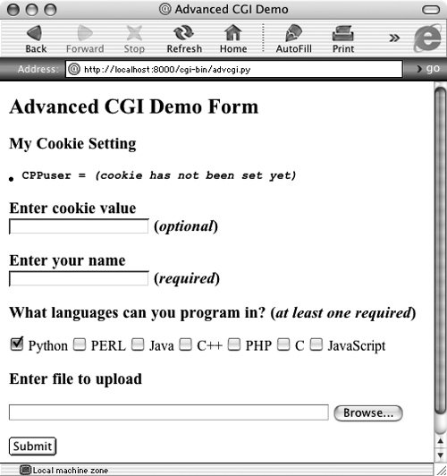
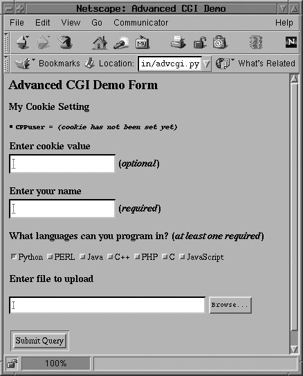
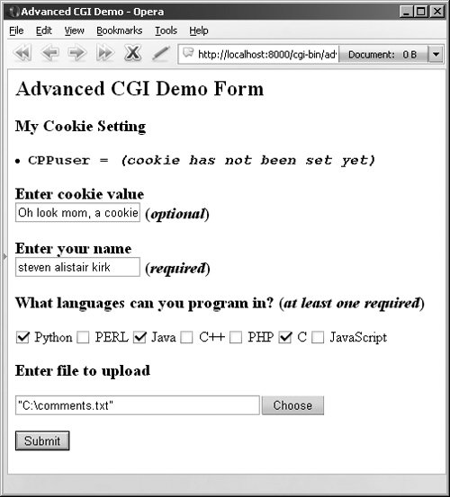
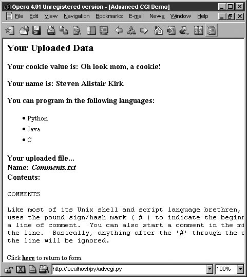
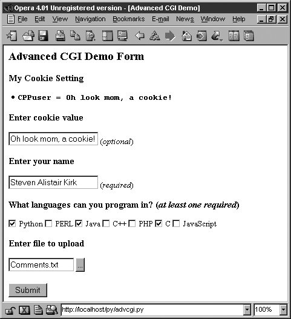

20.7. Advanced CGIWe will now take a look at some of the more advanced aspects of CGI programming. These include the use of cookiescached data saved on the client sidemultiple values for the same CGI field and file upload using multipart form submissions. To save space, we will show you all three of these features with a single application. Let's take a look at multipart submissions first. 20.7.1. Multipart Form Submission and File UploadingCurrently, the CGI specifications only allow two types of form encodings, "application/x-www-form-urlencoded" and "multipart/form-data." Because the former is the default, there is never a need to state the encoding in the FORM tag like this: <FORM enctype="application/x-www-form-urlencoded" ...> But for multipart forms, you must explicitly give the encoding as: <FORM enctype="multipart/form-data" ...> You can use either type of encoding for form submissions, but at this time, file uploads can only be performed with the multipart encoding. Multipart encoding was invented by Netscape in the early days but has since been adopted by Microsoft (starting with version 4 of Internet Explorer) as well as other browsers. File uploads are accomplished using the file input type: <INPUT type=file name=...> This directive presents an empty text field with a button on the side which allows you to browse your file directory structure for a file to upload. When using multipart, your Web client's form submission to the server will look amazingly like (multipart) e-mail messages with attachments. A separate encoding was needed because it just would not be necessarily wise to "urlencode" a file, especially a binary file. The information still gets to the server, but it is just "packaged" in a different way. Regardless of whether you use the default encoding or the multipart, the cgi module will process them in the same manner, providing keys and corresponding values in the form submission. You will simply access the data through your FieldStorage instance as before. 20.7.2. Multivalued FieldsIn addition to file uploads, we are going to show you how to process fields with multiple values. The most common case is when you have a set of checkboxes allowing a user to select from various choices. Each of the checkboxes is labeled with the same field name, but to differentiate them, each will have a different value associated with a particular checkbox. As you know, the data from the user are sent to the server in key-value pairs during form submission. When more than one checkbox is submitted, you will have multiple values associated with the same key. In these cases, rather than being given a single MiniFieldStorage instance for your data, the cgi module will create a list of such instances that you will iterate over to obtain the different values. Not too painful at all. 20.7.3. CookiesFinally, we will use cookies in our example. If you are not familiar with cookies, they are just bits of data information which a server at a Web site will request to be saved on the client side, e.g., the browser. Because HTTP is a "stateless" protocol, information that has to be carried from one page to another can be accomplished by using key-value pairs in the request as you have seen in the GET requests and screens earlier in this chapter. Another way of doing it, as we have also seen before, is using hidden form fields, such as the action variable in some of the later friends*.py scripts. These variables and their values are managed by the server because the pages they return to the client must embed these in generated pages. One alternative to maintaining persistency in state across multiple page views is to save the data on the client side instead. This is where cookies come in. Rather than embedding data to be saved in the returned Web pages, a server will make a request to the client to save a cookie. The cookie is linked to the domain of the originating server (so a server cannot set or override cookies from other Web sites) and has an expiration date (so your browser doesn't become cluttered with cookies). These two characteristics are tied to a cookie along with the key-value pair representing the data item of interest. There are other attributes of cookies such as a domain subpath or a request that a cookie should only be delivered in a secure environment. By using cookies, we no longer have to pass the data from page to page to track a user. Although they have been subject to a good amount of controversy over the privacy issue, most Web sites use cookies responsibly. To prepare you for the code, a Web server requests a client store a cookie by sending the "Set-Cookie" header immediately before the requested file. Once cookies are set on the client side, requests to the server will automatically have those cookies sent to the server using the HTTP_COOKIE environment variable. The cookies are delimited by semicolons and come in "key=value" pairs. All your application needs to do to access the data values is to split the string several times (i.e., using string.split() or manual parsing). The cookies are delimited by semicolons ( ; ), and each key-value pair is separated by equal signs ( = ). Like multipart encoding, cookies originated from Netscape, which implemented cookies and wrote up the first specification, which is still valid today. You can access this document at the following Web site: Once cookies are standardized and this document finally obsoleted, you will be able to get more current information from Request for Comment documents (RFCs). The most current one for cookies at the time of publication is RFC 2109. 20.7.4. Using Advanced CGIWe now present our CGI application, advcgi.py, which has code and functionality not too unlike the friends3.py script seen earlier in this chapter. The default first page is a user fill-out form consisting of four main parts: user-set cookie string, name field, checkbox list of programming languages, and file submission box. An image of this screen can be seen in Figure 20-14. Figure 20-14. Upload and multivalue form page in IE5 on MacOS XFigure 20-15 shows another look at the form from another browser. From this form, we can enter our information, such as the sample data given in Figure 20-16. Notice how the text in the button to search for files differs between browsers, i.e., "Browse ...", "Choose", "...", etc. Figure 20-15. The same advanced CGI form but in Netscape4 on Linux Figure 20-16. Submitting our advanced CGI demo form in Opera8 on Win32The data are submitted to the server using multipart encoding and retrieved in the same manner on the server side using the FieldStorage instance. The only tricky part is in retrieving the uploaded file. In our application, we choose to iterate over the file, reading it line by line. It is also possible to read in the entire contents of the file if you are not wary of its size. Since this is the first occasion data are received by the server, it is at this time, when returning the results page back to the client, that we use the "Set-Cookie:" header to cache our data in browser cookies. In Figure 20-17, you will see the results after submitting our form data. All the fields the user entered are shown on the page. The given file in the final dialog box was uploaded to the server and displayed as well. Figure 20-17. Results page generated and returned by the Web server in Opera4 on Win32 You will also notice the link at the bottom of the results page, which returns us to the form page, again using the same CGI script. If we click on that link at the bottom, no form data is submitted to our script, causing a form page to be displayed. Yet, as you can see from Figure 20-17, what shows up is anything but an empty form! Information previously entered by the user shows up! How did we accomplish this with no form data (either hidden or as query arguments in the URL)? The secret is that the data are stored on the client side in cookies, two in fact. The user cookie holds the string of data typed in by the user in the "Enter cookie value" form field, and the user's name, languages they are familiar with, and uploaded files are stored in the info cookie. When the script detects no form data, it shows the form page, but before the form page has been created, it grabs the cookies from the client (which are automatically transmitted by the client when the user clicks on the link) and fills out the form accordingly. So when the form is finally displayed, all the previously entered information appears to the user like magic (see Figure 20-18). Figure 20-18. Form page with data loaded from the Client cookies We are certain you are eager to take a look at this application, so here it is, in Example 20.8. Example 20.8. Advanced CGI Application (advcgi.py)
advcgi.py looks strikingly similar to our friends3.py CGI scripts seen earlier in this chapter. It has a form, results, and error pages to return. In addition to all of the advanced CGI features that are part of our new script, we are also using more of an object-oriented feel to our script by using a class with methods instead of just a set of functions. The HTML text for our pages is now static data for our class, meaning that they will remain constant across all instanceseven though there is actually only one instance in our case. Line-by-Line (Block-by-Block) ExplanationLines 17The usual startup and import lines appear here. The only module you may not be familiar with is cStringIO, which we briefly introduced at the end of Chapter 10 and also used in Example 20.1. cStringIO.StringIO() creates a file-like object out of a string so that access to the string is similar to opening a file and using the handle to access the data. Lines 912After the AdvCGI class is declared, the header and url (static class) variables are created for use by the methods displaying all the different pages. Lines 1480All the code in this block is used to generate and display the form page. The data attributes speak for themselves. getCPPCookies() obtains cookie information sent by the Web client, and showForm() collates all the information and sends the form page back to the client. Lines 8291This block of code is responsible for the error page. Lines 93144The results page is created using this block of code. The setCPPCookies() method requests that a client store the cookies for our application, and the doResults() method puts together all the data and sends the output back to the client. Lines 146196The script begins by instantiating an AdvCGI page object, then calls its go() method to start the ball rolling, in contrast to a strictly procedural programming process. The go() method contains the logic that reads all incoming data and decides which page to show. The error page will be displayed if no name was given or if no languages were checked. The showForm() method is called to output the form if no input data were received, and the doResults() method is invoked otherwise to display the results page. Error situations are created by setting the self.error variable, which serves two purposes. It lets you set an error reason as a string and also serves as a flag to indicate that an error has occurred. If this value is not blank, the user will be forwarded to the error page. Handling the person field (lines 154159) is the same as we have seen in the past, a single key-value pair; however, collecting the language information is a bit trickier since we must check for either a (Mini)FieldStorage instance or a list of such instances. We will employ the familiar type() built-in function for this purpose. In the end, we will have a list of a single language name or many, depending on the user's selections. The use of cookies (lines 161165) to contain data illustrates how they can be used to avoid using any kind of CGI field pass-through. You will notice in the code that obtains such data that no CGI processing is invoked, meaning that the data do not come from the FieldStorage object. The data are passed to us by the Web client with each request and the values (user's chosen data as well as information to fill in a succeeding form with pre-existing information) are obtained from cookies. Because the showResults() method receives the new input from the user, it has the responsibility of setting the cookies, i.e., by calling setCPPCookies(). showForm(), however, must read in the cookies' values in order to display a form page with the current user selections. This is done by its invocation of the getCPPCookies() method. Finally, we get to the file upload processing (lines 178187). Regardless of whether a file was actually uploaded, FieldStorage is given a file handle in the file attribute. On line 180, if there was no filename given, then we just set it to a blank string. If the value attribute is accessed, the entire contents of the file will be placed into value. As a better alternative, you can access the file pointerthe file attributeand perhaps read only one line at a time or other kind of slower processing. In our case, file uploads are only part of user submissions, so we simply pass on the file pointer to the doResults() function to extract the data from the file. doResults() will display only the first 1K of the file for space reasons and to show you that it is not necessary (or necessarily productive/useful) to display a four-megabyte binary file. |